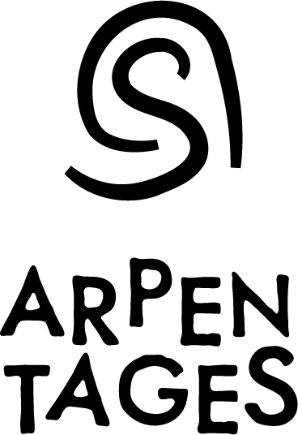

Arpentages est une enseigne fondée par deux docteurs en géographie, au service des collectivité, associations et entreprises de Nouvelle-Aquitaine et au-delà. Nous combinons expertise scientifique, innovation et pédagogie pour faire avancer vos projets territoriaux ou environnementaux.
Nous croyons en une approche humaine, rigoureuse et engagée.
Notre priorité : vous faire gagner du temps, sécuriser vos démarches et renforcer l’impact de vos projets, en toute transparence. Avec un double regard de chercheurs et de consultants, nous allions rigueur académique et efficacité terrain.
La cartographie SIG comme la communication stratégique sont, pour nous, deux manières de clarifier un message et d’accompagner la décision.
Deux pôles d’excellence à votre service
Studio Cartographie et Géomatique
Au services des profesionnels de l’aménagement et de l’environnement, Thomas Maillard est spécialiste de QGIS en Nouvelle-Aquitaine. Il accompagne de nombreuses agences de paysage et d’urbanisme. Cartographie réglementaire, analyse SIG, dépannage QGIS, accompagnement géomatique, formations certifiées QUALIOPI.
Conseil en communication et Appels à projet
Au services des entreprises innovantes dans les transitions environnementales, Margaux Mauclaire propose du conseil sur-mesure en communication stratégique pour maximiser vos chances d’obtenir des financements. Aide à la conception d’argumentaire, rédaction de réponse à AAP, coaching soutenance devant jury, valorisation de la R&D.
Qui sommes-nous ?
Margaux Mauclaire et Thomas Maillard, sont deux géographes engagés. Après une première vie professionnelle dans la recherche au CNRS, nous avons décidé de mettre nos savoir-faire au service des professionnels de la transition écologique et sociale. Cartographes, formateurs, consultant, nous vous accompagnons pour valoriser vos projets.
Margaux Mauclaire
Après avoir arpenté le nord du Sénégal dans une équipe de recherche pluri-disciplinaire et internationales pour comprendre les mécanisme d’adaptation des éleveurs face aux changements climatiques et les tensions géopolitiques locales que cela induisait, j’ai accompagné plusieurs années des agriculteurs dans toute la Nouvelle-Aquitaine. Je suis très attaché à l’enquête de terrain et au recueil de la parole des parties prenantes et des habitants, gage de qualité et de réussite pour tout projet. J’ai co-fondé Arpentages en 2021 et rejoint la SCOP Coop’Alpha en 2025.
Pour financer mes séjours de recherche, j’ai candidaté et gagné de nombreux appels à projet devant des jurys exigeants et pluridisciplinaires. Par la suite, j’ai monté de nombreux dossiers de réponse à des appels d’offre et des appels à projet. Ma spécialité est de débusquer les faiblesses de vos argumentaires pour vous aider à construire un dossier solide et convainquant.
Thomas Maillard
Passionné de voyage et de cartes géographiques, je suis devenu géographe, géomaticien et cartographe.
Depuis 2012, j’ai formé et accompagné plus d’une centaine d’étudiants et de professionnels à la cartographie, aux systèmes d’information géographique (SIG), à l’enquête de terrain et à l’analyse spatiale. Pendant 11 ans, j’ai contribué à plusieurs projets de recherche et développement en Afrique de l’Ouest et en France, ensuite j’ai co-fondé ArpentageS en 2021 et rejoint la SCOP Coop’Alpha en 2024.
Enseignant et formateur, j’interviens en formation professionnelle certifiée et dans différents établissements supérieurs (ENSAP Bx, UBM, UP8).
Je suis également chercheur associé au laboratoire Passages du CNRS.
Pourquoi Arpentages ?
Le terme arpentage(s) fait référence à trois valeurs fondamentale dans notre travail :
- L’arpentage, c’est initialement l’action de mesurer précisément la longueur d’une parcelle. C’est le travail fondamentale du cartographe, celui qui met en valeur sa rigueur et sa précision.
- L’arpentage, c’est par extension l’action d’aller sur le terrain pour observer, interroger les habitants, mener l’enquête. C’est le travail de collecte et de création de données, c’est le travail empirique du chercheur, du géographe, du paysagiste. Mener l’enquête sur le terrain est ce qui donne de la valeur à notre travail, ce qui le rend proche des réalités concrètes du terrain, des singularités de chaque acteurs ou territoires.
- L’arpentage en éducation populaire est une méthode d’apprentissage collectif qui consiste à explorer et à analyser un texte ou un sujet de manière collaborative et critique. Il sert à rendre accessible des connaissances complexes, favoriser l’émancipation des participants et encourager une réflexion collective pour une meilleure compréhension et action sur des enjeux sociaux, environnementaux ou politiques. Cela symbolise notre attachement à la communication et la pédagogie.
Atelier découverte de QField
J’organise exceptionnellement un atelier pour vous faire tester et découvrir QFIELD sur le terrain. 🗺️...
Modélisation de Zones d'Influence Visuelle

Beyond The Sea projet ADEME

Modélisation de Zones d'Influence Visuelle pour l'actualisation de l'Aire d'Influence Paysagère du Grand Site de France Bibracte -Mont Beuvray